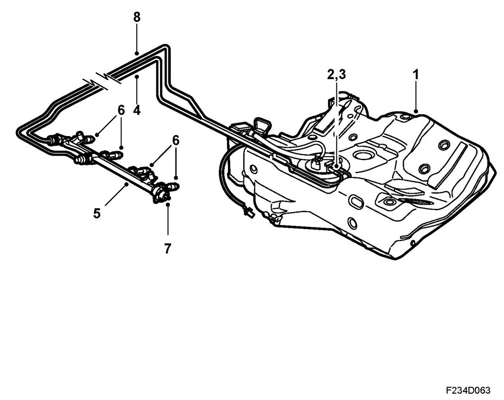

Fuel System
Brief Description
Overview

1. Fuel tank
2. Fuel pump
3. Fuel filter
4. Fuel line, delivery
5. Fuel distribution pipe
6. Injector
7. Fuel pressure regulator
8. Fuel line, return
Description
The fuel system works with an electric pump located in the fuel tank drawing fuel from the tank and building up fuel pressure in the system. The level of pressure is determined by the fuel pressure regulator, which maintains a constant fuel pressure in relation to the pressure in the engine intake manifold. In this way, the injected fuel quantity will only be affected by the injection timing. There is a fuel filter fitted in the fuel pump.
Petrol is injected by injectors (electric solenoid valves) fitted in the cylinder head close to the intake valves and connected through a common fuel rail.
The opening duration of the injectors is controlled by electrical pulses from the engine control module. See Group 2, E39, for a detailed description of the engine management system.